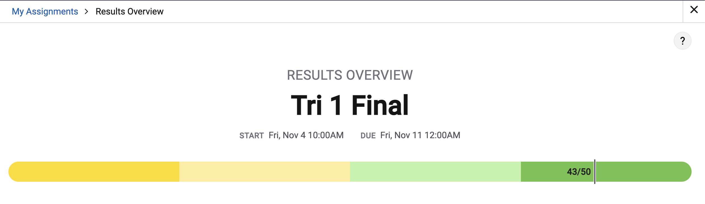

Questions
A lot of the questions consisted of those on collaboration and its benefits. It also asked questions about the Internet, such as protocols and data transmissions. There were also many questions that gave a block of code and asked for the result or an error in the code. A few problems even described programs and asked potential errors, inputs, outputs, and uses. Some questions asked about coding and data types, such as lists, strings, and variables. There were also some questions on binary numbers, algorithms, indexes, sequences, and results of code. Most of these questions were fairly straightforward, but some of them were misleading, and required a lot of thinking.
What I missed
I missed 7 questions. Most of these were due to silly mistakes. For example, the question asked to choose 2 answers but I only chose 1. I also missed 1 or 2 questions because I forgot some information about the Internet, protocols, and binary coding. Some problems that included code were also very confusing, often interchanging the values of variables constantly, and then asking for the output.
Question #16: I put that “The message is broken into packets that are transmitted in a specified order. Each packet must be received in the order it was sent for the message to be correctly reassembled by the recipient’s device.” The correct answer was “The message is broken into packets. The packets can be received in any order and still be reassembled by the recipient’s device.”. This is because Messages are broken into packets. Each packet contains data to be transmitted, as well as metadata for routing and reassembling the data upon receipt. This allows the packets to be received in any order and still be reassembled correctly.
Question #17: I put that “Open protocols allow devices to specify how data packets are to be routed on the Internet in advance.” The correct answer was “Open protocols provide a way to standardize data transmission between different devices.” Protocols are agreed-upon sets of rules that specify the behavior of a system. Protocols used on the Internet enable devices from different manufacturers to communicate in a standard way.
Question #31: I thought that the answer would be f, but it would actually be h. This is because the character “f” is the character at index 3 of the string element at index 2 in wordList.
Question #32: I thought the contents would be [10, 30, 50, 70, 20, 40, 60, 80]. The actual contents would be [10, 30, 50, 70]. This is because The last assignment statement assigns a copy of myList to yourList. Since myList contains [10, 30, 50, 70], yourList will also contain [10, 30, 50, 70].
Question #33: I thought that 1, 3 and 5 would be displayed. It would actually be 100 300 500. This is because the code segment traverses the list from left to right and displays each value that is greater than or equal to 90.
Question #35: I confused this one a bit. The last line in this code segment would be set maxPS to 50 regardless of the value of time.
Question #48: I thought that all x, y and z will be displayed but the correct answer is just x and z. This is because the first three statements assign values to the variables. The fourth statement assigns the value of y (which is 50) to x. The fifth statement assigns the value of z (which is 75) to y. The sixth statement assigns the value of x (which is 50) to z. Therefore, x and z both have the value 50.
What I can do better
Next time, I will make sure to read the problem carefully, and figure out exactly what it is asking. I can also look at the block of code, if given, more carefully, and comprehend what it is doing. I also have to remember to study some of the AP CSP materials, mainly those about the Internet, including protocols, and binary coding. I also have to study data trannsmissions and algorithms.